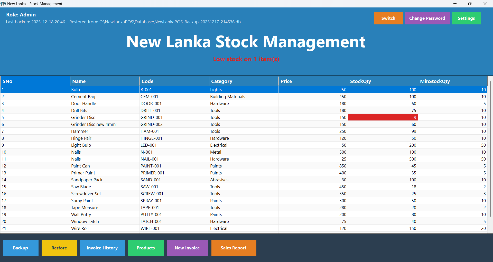

Receipt flow, discounts, returns, and counter-friendly operation.
POS systems
Operations software that feels controlled.
Practical POS and workflow systems for small shops and service teams: billing, stock, reporting, role-based access, backup planning, and supportable security-aware setup.
Counter flowBilling, stock, roles, reports.
Operational software should feel predictable under pressure.
ModeOwner viewControlled
RecoveryAccess and backups planned before they hurt.
Supportable setup matters as much as feature count.


Operational core
The best POS system is boring in the right way.
Quick to use, clear to manage, and backed by sensible access, backup, and recovery planning before it becomes business-critical.
Item management, low-stock awareness, and reporting.
Owner, cashier, and admin access without shared credentials.
Recovery planning and safer handling of operational data.
Security-aware support
For small businesses that need reliability before complexity.
OpenForge can help shape the workflow, roles, backups, admin access, and recovery plan so the system is not just useful on launch day, but safer to operate afterward.